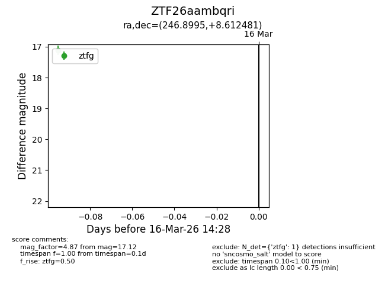
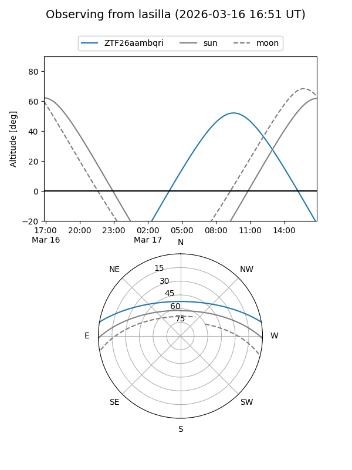
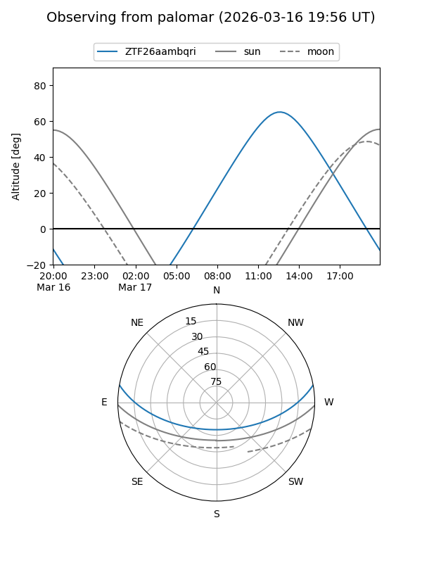

ZTF26aambqri
Target ZTF26aambqri at 2026-03-16 14:30
Aliases and brokers:
FINK: link
Lasair: link
ALeRCE: link
alt names
ZTF26aambqri (ztf,fink_ztf)
Coordinates:
equatorial (ra, dec) = 246.8995,+8.61248
equatorial (HMS+DMS) = 16:27:35.88,+08:36:44.93
galactic (l, b) = (23.6031,+35.80365)
Flags:
Photometry:
last ztfg=17.12
1 ztfg detections
Lightcurve

Visibility


Additional plots